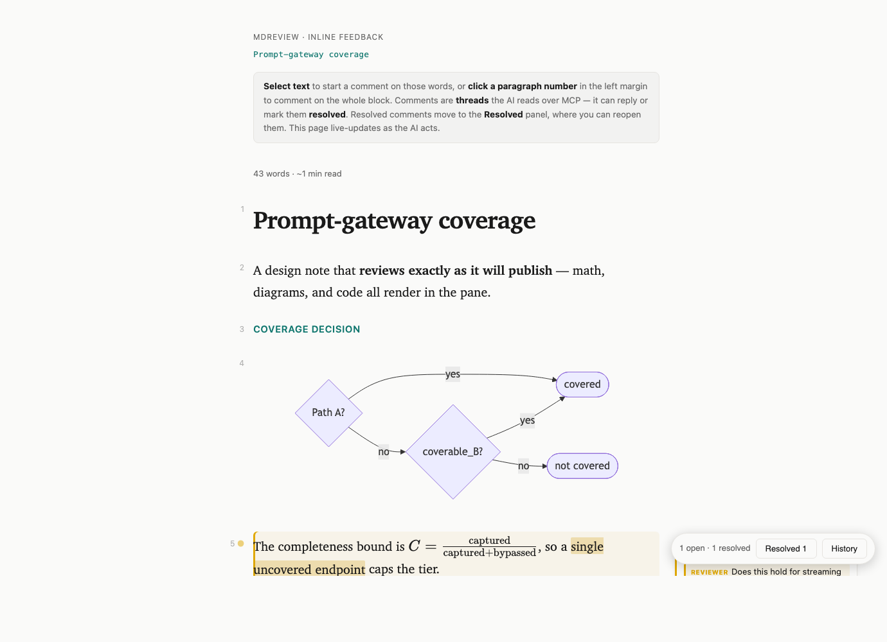

A containerized markdown review microservice: an agent POSTs markdown, hands a human the returned URL, and the human marks it up in the browser — highlighting text into threaded comments. The agent reads them over HTTP or MCP, replies, resolves, and pushes revisions. Math, diagrams, and code render as they'll publish.

The review loop
POST markdown to /api/reviews → get back a review_url.
Open the URL, highlight text, leave threaded comments in the margin.
Pull open comments, reply to discuss or resolve once addressed.
PUT the tightened source — the human's page live-reloads.
Renders like it'll publish
The viewer renders the draft the way a Jekyll / MathJax site does — so a math- or diagram-heavy draft reviews exactly as it ships, not as raw markup. The MCP tools tell the agent to author to this: a flow as a Mermaid diagram, not ASCII art.
$…$ / $$…$$```mermaidThe whole contract is four calls
# 1 — submit a draft curl -X POST $BASE/api/reviews -d '{"title":"My draft","markdown":"# My draft\n..."}' → {"id":"…","review_url":"…","feedback_url":"…"} # 2 — hand review_url to a human; they annotate in the browser # 3 — read the threaded comments the human raised curl $BASE/api/reviews/$id/comments?status=open → reply to discuss, or resolve once you've addressed it # 4 — apply the edits, push the revision (their page live-reloads) curl -X PUT $BASE/api/reviews/$id/source -d '{"markdown":"# My draft\n...tightened..."}'
Comments carry an open → resolved → reopened state machine the service enforces; every revision snapshots a history round, so earlier drafts and their feedback stay recoverable. Full API table in the README.
Run it
docker compose up -d --build
# → http://localhost:8137
Stdlib Python only — no pip installs, tiny image, renderers vendored. Config and variants in the README.
Speaks MCP — 18 tools
A thin, stdlib-only stdio MCP server (JSON-RPC 2.0) ships in the repo as 18 first-class tools, so an MCP agent plugs in and self-serves — no hand-rolled HTTP. Wraps the running service and adds no state.
Image attach by path — no base64 through the model's context. Tools & client config in the README.
One container, one URL, any number of concurrent reviews — each isolated by id.